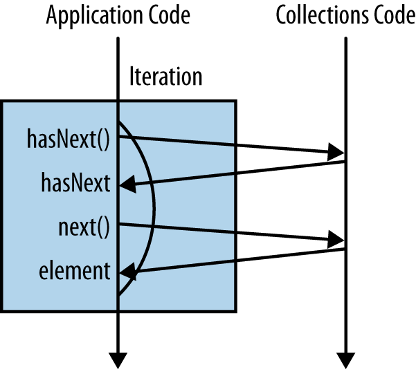
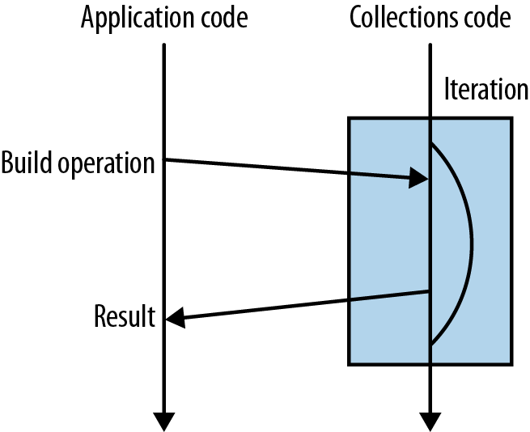
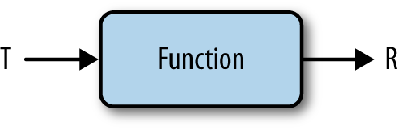
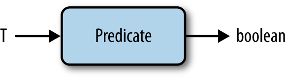
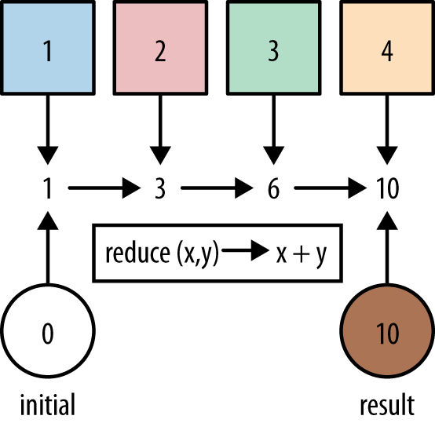

class: center, middle # Java 8: streams --- # Agenda 1. Introduction 2. Internal/external iteration 3. Lazy / eager 4. map / filter / reduce --- # Introduction ### Old way - *external iteration* : ```java int count = 0; for (Artist artist : allArtists) { if (artist.isFrom("London")) { count++; } } ``` -- _Old way_? Give me a break, what's wrong with it? -- - hard to understand what it does -- - it does three things at once: * it iterates over a colletion * it applies some condition for each element * it increments some previously created variable --- # Internal iteration: ```java Iterator<Artist> iterator = allArtists.iterator(); while(iterator.hasNext()) { Artist artist = iterator.next(); if (artist.isFrom("London")) { count++; } }``` -- <center></center> -- <center>It mixes <strong>what</strong> you are doing with <strong>how</strong> you are doing it.</center> --- # External iteration ```java long count = allArtists.stream() .filter(artist -> artist.isFrom("London")) .count();``` -- <center></center> -- - two operations: * _filter_ * _count_ -- - but filtering is lazy -- - _count_ is _eager_ --- # Lazy? Eager? What do you mean? ```java List result = artists.stream() .filter(artist -> artist.isFrom("London")) .map(Artist::getName) .map(String::toUpperCase) .filter(name -> name.startsWith("a")) .collect(Collectors.toList());``` -- ### Lazy: _map_, _filter_ -- ### Eager: _collect_ --- # Why won't just we use _forEach_? ### With side-effects: ```java ArrayList<String> results = new ArrayList<>(); stream.filter(s -> pattern.matcher(s).matches()) .forEach(s -> results.add(s));``` -- ### Without side-effects: ```java List<String>results = stream.filter(s -> pattern.matcher(s).matches()) .collect(Collectors.toList());``` -- ## <center>Not only it looks better but it is _thread-safe_ !</center> --- # Eager methods: - collect - toArray -- - reduce - max - min - count -- - allMatch - anyMatch - noneMatch -- - findAny - findFirst --- # Lazy methods: - filter - map (mapToDouble, mapToInt, mapToLong) - flatMap (flatMapToDouble, flatMapToInt, flatMapToLong) -- - distinct - limit - sorted -- - peek - skip --- # map <center></center> ```java <R> Stream<R> map(Function<? super T, ? extends R> mapper); ``` -- ## <center>example1, example2, example3</center> --- # filter ```java Stream<T> filter(Predicate<? super T> predicate); ``` <center></center> -- ## <center>example4</center> --- # reduce <center></center> ```java Optional<T> reduce(BinaryOperator<T> accumulator); T reduce(T identity, BinaryOperator<T> accumulator); <U> U reduce(U identity, BiFunction<U, ? super T, U> accumulator, BinaryOperator<U> combiner); ``` -- ## <center>example5, example6, example7</center> --- # Exercises from the book https://github.com/RichardWarburton/java-8-lambdas-exercises --- # Clojure vs. Java: `map` using `reduce` ```clojure (defn my-map "Implementation of `map` using `reduce`" [f coll] (reduce (fn [acc x] (conj acc (f x))) [] coll)) (deftest test-map (is (= (map inc [1 2 3]) (my-map inc [1 2 3])))) ``` -- ```java public static <I, O> List<O> map(Stream<I> stream, Function<I, O> mapper) { return stream.reduce(new ArrayList<O>(), (acc, item) -> { List<O> list = new ArrayList<>(acc); list.add(mapper.apply(item)); return list; }, (List<O> left, List<O> right) -> { List<O> newLeft = new ArrayList<>(left); newLeft.addAll(right); return newLeft; }); } ``` --- # Clojure vs. Java: `filter` using `reduce` ```clojure (defn my-filter "Implementation of `filter` using `reduce`" [f coll] (reduce (fn [acc x] (if (f x) (conj acc x) acc)) [] coll)) (deftest test-filter (is (= (filter odd? [1 2 3]) (test-filter odd? [1 2 3])))) ``` -- ```java public static <I> List<I> filter(Stream<I> stream, Predicate<I> predicate) { return stream.reduce(new ArrayList<I>(), (List<I> acc, I item) -> { List<I> list = new ArrayList<>(acc); if (predicate.test(item)) { list.add(item); } return list; }, (List<I> left, List<I> right) -> { List<I> newLeft = new ArrayList<>(left); newLeft.addAll(right); return newLeft; }); } ```